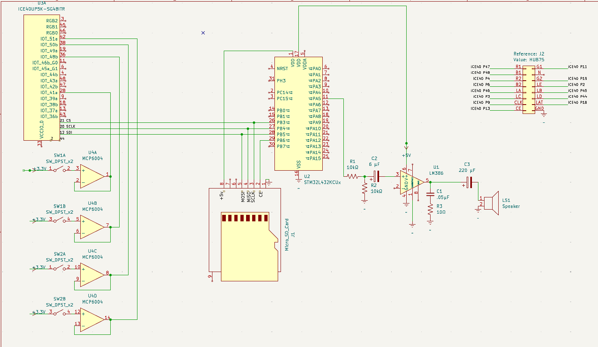
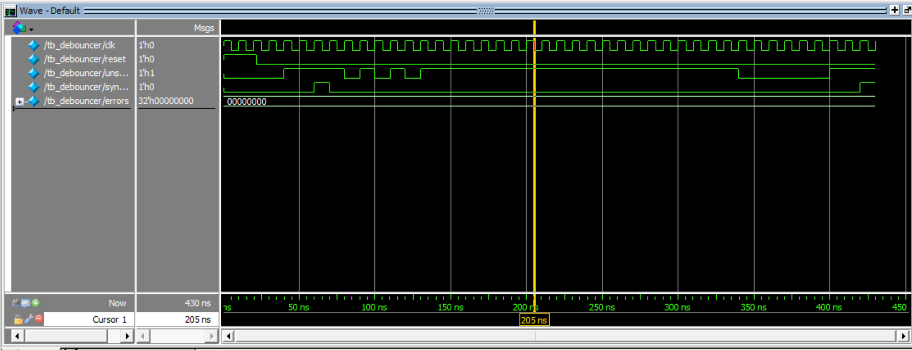
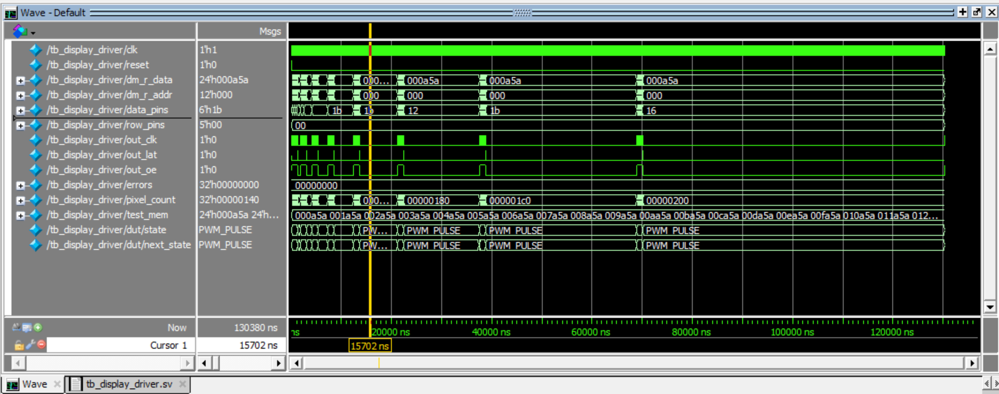

Final Project: DDRUM
1. Abstract & Team
Team Members:
Santiago Burgos-Fallon: A senior Engineering student at Harvey Mudd College. Passionate about everything computers, from digital design and embedded systems to data analysis. This summer he worked at TSMC in Lithography Process Engineering, where he analyzed overlay relationships, tuned control systems, and pushed on design-for-manufacturability to improve chip yield and performance. Additionally he has built practical digital systems including a 16 bit IEEE-754 FMA and a drone navigation project that fuses computer vision with ultra-wideband (UWB) positioning. - Portfolio
Abraham Rock: An Engineering student at Harvey Mudd College in the Class of 2027. His interests lie in digital electronics, embedded systems, and systems engineering. He is in the ASHMC Executive Board where he acts as this year’s Muddlife Director. - Portfolio
Abstract: DDRUM is an embedded rhythm game system that integrates real-time audio processing, custom hardware inputs, and high-speed visual feedback. The system utilizes an STM32L432KC microcontroller for audio streaming, beat detection, and synchronization, reading uncompressed WAV files from an SD card and buffering them to create a precise “lookahead” mechanic. An iCE40UP5K FPGA acts as a parallel graphics accelerator, driving a 64x64 HUB75 LED matrix with 24-bit color via Binary Code Modulation (BCM) while simultaneously handling input from four custom piezoelectric drum pads with zero-latency debounce logic. By decoupling audio analysis from visual rendering across two distinct processors communicating via SPI, DDRUM achieves fluid, high-refresh rate visuals and accurate rhythm scoring without the overhead of an operating system.
Project Demonstration:
2. System Overview
DDRUM is a four-pad rhythm game in the spirit of DDR and Guitar Hero. Notes descend in four lanes on a display while a song plays. The player strikes one of four drum pads on the beat, and the system scores accuracy as Perfect, Okay, or Miss with real-time visual feedback and a running score/combo.
High Level Block Diagram

Block Diagram
3. Hardware Design & Schematics
Bill of Materials
| Item | Qty | Price | Source | Part Number / Notes |
|---|---|---|---|---|
| 64×64 RGB LED Matrix (HUB75) | 1 | $36.59 | Amazon | P3.0 Panel |
| Piezo Disc Transducers | 15 | $6.49 | Amazon | 27 mm Piezo Discs |
| Micro SD Card Reader | 1 | $0.00 | Engineering Stockroom | Teensy Brand (Unknown P/N) |
| ICE40UP5K-SG48I FPGA | 1 | Included | Included with Ps kit | ICE40UP5K-SG48I |
| STM32L432KCU MCU | 1 | Included | Included with Ps kit |
New Hardware Description
Piezoelectric Transducers & Analog Front End: The Piezo discs are small sensors that generate electrical charge from mechanical stress. Looking at the raw oscilloscope traces of the sensors, these are very sensitive sensors that can vary heavily in output, capable of producing a signal over 15 V in amplitude. To protect our FPGA IOs and to ensure loading doesn’t ruin the signal, we ran it through a unity gain buffer Op-Amp to potentially rail out and get the output signal to a safe voltage (3.3 V).

Raw Signal 1

Raw Signal 2

Raw Signal 3
Figure 1: Oscilloscope analysis of the Piezoelectric transducers showing the voltage spikes and the buffering circuit.
HUB75 LED Matrix: The 64x64 RGB LED Matrix is a high-density display that utilizes the HUB75 interface. Unlike the SPI-based LCDs used in previous course labs which possess internal RAM and controllers, this panel is a “dumb” display that requires continuous, high-speed driving of its shift registers and row select lines to maintain an image. Since the LEDs are purely digital (on/off), we utilized the FPGA to implement Binary Code Modulation (BCM)—rapidly modulating the specific on-times of the LEDs—to achieve full 24-bit color depth without utilizing a specialized driver chip.
Micro SD Card Reader: To store the high-fidelity audio tracks for the game, we utilized a Micro SD Card breakout board. This module interfaces with the STM32 via the SPI protocol (Mode 0) running at 2.5 MHz. Unlike the internal flash memory on the MCU, which is limited in size, the SD card allows us to store large, uncompressed .wav files. We implemented a read-only FAT32 file system driver to locate the target song files and stream data in 512-byte sectors into the MCU’s circular buffer for processing.
Schematic

Figure 2: Main System Schematic.
4. Microcontroller Design
Our Microcontroller is functioning as the central controller. It is responsible for playing audio, analyzing the music data to generate beats, and synchronizing audio playback with the FPGA’s visual elements.
To read in the music data, we use a Micro SD Card Reader acting as a peripheral where we read a .wav file from the SD card 512 bytes at a time.

Figure 3: Logic analyzer trace of SPI communication between MCU and SD Card.
For most rhythm games — including our own, a major part is displaying the beats from the song before they are played. Since we chose a fall time of 2 seconds for the visual logic on our FPGA, we needed to buffer the output by exactly 2 seconds to make the beat info sent to the FPGA match up. To do this, after reading in a sector, we analyze it immediately, save it into a circular RAM buffer, and then later use the DAC peripheral to play that audio cleanly.
To determine what is a valid beat in the song, we considered analyzing the frequency of a chunk of the song via an FFT and considering low enough frequencies as bass/drum beats. However, we realized frequency analysis alone would not function well as real beats are a complex combination of frequency, volume, and transient attack, making it a challenge for even sophisticated neural networks.
So we decided that to be more efficient and save us the time of implementing an FFT accelerator, we solely consider volume dynamics. We calculated the average volume of the song as we read it in via a simple integrator to track the running average of the song’s energy; if a sample’s amplitude spikes 20% higher than this average, we register it as a beat.
Once a beat is identified, we communicate with the FPGA using the SPI peripheral. The FPGA shares the same SPI bus as the SD card but is addressed via a separate Chip Select pin. We simply assert the line, transmit a single-byte bitmask indicating the active lane, and de-assert the line.

2nd Lane Active

4th Lane Active
Figure 4: Logic analyzer trace of SPI transaction sending beat mask from MCU to FPGA.
Finally, for the audio output, we use the DAC driven by a hardware timer (TIM6). We configure the timer to trigger an interrupt at the exact sample rate of the file. On every tick, the handler pulls the “oldest” byte from the tail of our circular buffer and writes it to the DAC output register, ensuring the audio plays smoothly and in perfect sync with the visuals we triggered 2 seconds prior.
5. FPGA Design
Our FPGA functions as a graphics processor and keeps track of the game logic. While the MCU handled high-level audio processing, we used our FPGA to drive the LED Matrix quickly, track falling notes, and handle drum beat inputs all in parallel.
RTL Hierarchy

Figure 5: Generated Hierarchy Diagram with TerosHDL

Figure 6: Block Diagram of RTL Structure.
The FPGA is an SPI peripheral for the MCU, waiting for chip select to drop so it can shift in a beat byte to iwnterpret which lane it should display on the LED Matrix. To prevent metastability between the crossing clock domains of the SPI Clock and its primitive HFOSC, we have the inputs go through a two-layer shift register to synchronize new beats safely.
The core gameplay is all contained within the visual driving logic in the pattern_gen module. Each of the 4 lanes is a 64-bit shift register. When a beat arrives from the SPI interface, it simply travels through the shift register at a divided clock’s pace. For controlling all visual things including the “Hit Line,” we can simply check when and where a bit is in the shift register to tell if the hits we detect are “on time”.
We use our Piezoelectric Disc Transducers as buttons to detect impact from the user. While they inherently aren’t very bouncy like mechanical buttons, putting them in a 3D-Printed Drum Casing added some bounce during testing, so we used a debouncer module to mediate this with a 100ms lockout.
The most computationally expensive part of this design is driving the HUB75 and using Binary Coded Modulation (BCM). To prevent screen tearing (visual bleeding), we write the game data to a “back buffer” while the hub75_framebuffer module grabs data from the “front buffer” for display. Since the LED panels are purely digital (on/off), the BCM logic rapidly modulates the LEDs—turning them on for short intervals for LSBs and longer intervals for MSBs—to trick the eye into seeing full 24-bit color.
Finally, to display the player’s progress, we implemented a font_rom that maps the current score to 5x3 pixel bitmaps, rendering them directly onto the matrix in real-time alongside the falling notes.
Verification
The modules that we wrote were: top, pattern_gen, font_rom, debouncer, beat_reciever, hit_detector. Testbenches were written to test them individually.
Debouncer:

Debouncing Module
Pattern Generator:

Pattern Generator Module
SPI Reciever (inst. as beat_detector):

SPI Module
Display Driver:

Driver Module
Display Memory:

Memory Module
6. Results
The final DDRUM system met all design specifications, achieving fluid integration between the audio subsystem and the custom FPGA graphics accelerator. Audio Synchronization & Memory Management The system successfully implemented a 2.00-second lookahead buffer to facilitate beat detection. Given the STM32L432KC’s constraint of 64KB SRAM, we utilized 16 kHz, 8-bit mono audio. This configuration required approximately 44.1 KB of RAM for the 2-second window, leaving adequate headroom for the stack, heap, and file system drivers. The SD card throughput was measured at approximately 200 KB/s, easily sustaining the playback consumption rate of ~16 KB/s and preventing buffer underruns. Visual Refresh Rates The iCE40 FPGA successfully drove the HUB75 matrix using Binary Code Modulation (BCM) logic. We achieved a visual refresh rate of >60 Hz with full 24-bit color depth (8 bits per channel). The dedicated hardware SPI interface handled the beat mask transfer with negligible latency (< 1 \(\mu\)s), ensuring the visual “hit line” remained perfectly aligned with the audible beat. Input Latency & Signal Integrity The piezoelectric analog front-end, combined with the Unity Gain Buffer, successfully clamped input voltages to the safe 0V–3.3V logic range. The hardware-based debouncer, tuned to a 10 ms lockout window, eliminated mechanical “ringing” from the sensor pads. This resulted in a clean, single trigger event per drum strike, removing false positives while maintaining a responsive feel for the player.


Figure 7: The completed DDRUM system.
7. References & Acknowledgements
References: no2fpga’s no2hub75 hardware implementation
Acknowledgements: Thank you to Prof. Spencer for reigning in the expectations of this project and making it all possible. Thank you to the T.A.’s Neil and Troy for being a pillar of support for us and the whole class.
AI Feedback and Usage: We used AI for help getting the DAC peripheral to work, and bug fixing and clarification for driving the HUB75 interface with our pattern_gen module. In our liminal testing we found ChatGPT to be more proficient with HDL and Gemini to be better at C.